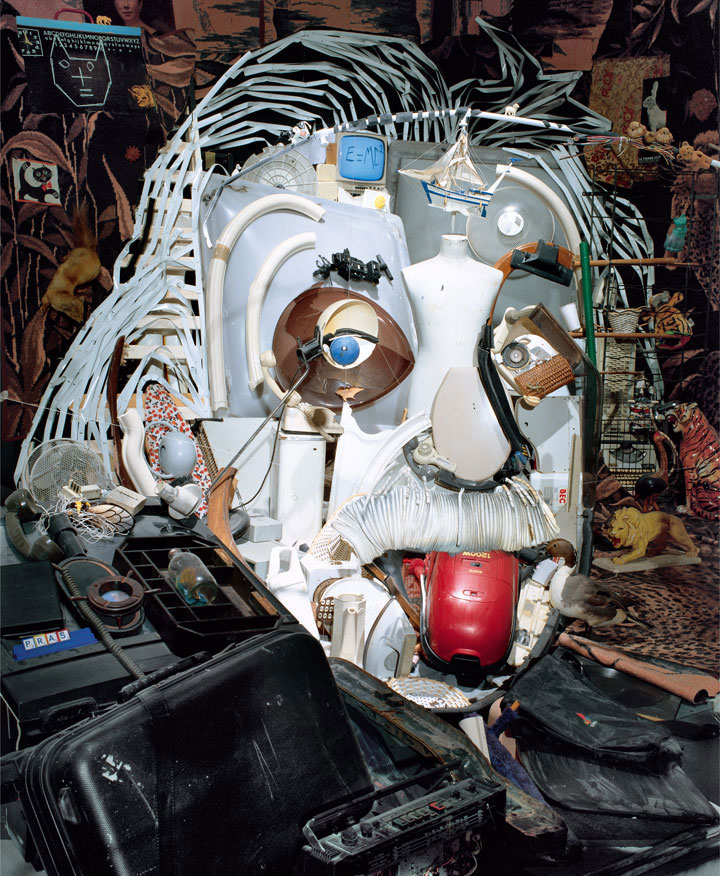

For centuries, snooding snoods have pondered what Snood looks like. Many have speculated something that looks surprisingly similair to a giant sock. But this raised many questions - because at the end of time, would snood be kicking itself?
Below is a compilation of all the artists impresions of what snood looks like, created throughout the ages.
The Eiffel TowerThe Eiffel Tower was built for many reasons, mainly be one the main attraction at the Paris World's Fair in 1889. Of course, the design of the tower was based off one loyal Follower's idea of what the snood looked like. Of course, this fact has been widley forgotten, but now you know. THe eiffel tower may in fact be snood itself, but we couldn't possibly understand why it would want to look like this.
Built By THE FRENCH SNOODERS |
|
|  | Albert EinstienIt is common knowlege that Albert Einstien was in fact pulled from the ocean and brought to life just like Frankenstien's monster, but few question what he was doing there in the first place, and how he managed to do so much for science. The truth is, of course, that he was built by a true believer thousands of years ago, snood overseeing the creation in order to gift future followers with scientific advancements.
Found somewhere in THE PACIFIC OCEAN |
 |
The Death StarGeorge Lucas was one of the most loyal snood followers, and some believe he himself is the physical embodyment of snood itself. This is widely regarded as false, but that didn't mean he didn't sneak snood into his movies. The death star, of course, is what he believes snood to look like, and it is hard to doubt this sometimes.
Pulled straight from GEORGE LUCAS'S BRAIN |
Do you think you know what Snood looks like? Email snood127@gmail.com with an image, and a brief description, and your image can be added to this page!!